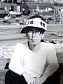
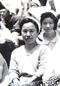

三池ＣＯ患者 中野清道さんの場合

中野清道さん、大正5年、鹿児島県出水市生まれ。三井三池炭鉱三川鉱で仕繰夫として作業に従事中の昭和38年11月9日
午後3時10分頃、第一斜坑で発生した炭塵爆発の被害に遭う。死者458人、ＣＯ中毒患者約839人。大惨事だった。
そのとき中野清道さんは47歳。働き盛りの時だった。幸い一命はとりとめた。「生きててよかったね」と、誰しもが
そのときそう思った。しかし、その日が、炭塵爆発事故がもたらしたＣＯ中毒患者としての長い闘病生活のはじまりでも
あった。
ＣＯ中毒患者になる前は、幾分短気ではあったが、気まじめかつ無口で、酒は一切口にしない人柄だった。それが被災
してからは「物忘れ、心筋梗塞、頭痛などの病状に加え、性格も一段とおとなしくなり、ベッドと薬の生活のみ」になって
しまったという。
中野清道さんの次男は昭和21年生まれ。三池工業高校を卒業するまでの18年間、荒尾市緑ヶ丘にあった三井三池炭鉱の
暁町社宅で育った。
昭和40年に卒業すると就職のため東京へ上京。都会への憧れもあったが、危険かつ将来のない炭鉱では働きたくないと
いう気持ちと、争議がもたらした周囲の複雑な人間関係から脱出したいという思いが強くあったという。しかし一方、ＣＯ
中毒患者となった父親とその看病に明け暮れる母親のことを危惧する気持ちが交差して、「後ろ髪を引かれる思いだった」
という。
「三池争議は私たち家族の人生に数多くの実体験を与えた」と息子さんは語る。
闘争中から第二組合への誘いが度々あった。隣が結成時からの第二組合員宅であったせいか、その後近くに越してきた
第二組合長らが深夜を選んで訪ねてきては「支度金５万円、労働条件の良い職場への配置替え、子供の就職の世話など」
好条件を並べ立ててきた。当時の5万円といえば現在の50万から60万円位になるだろうか、月給取りの夢であったテレビや
冷蔵庫、洗たく機が買えるという甘言でしきりに誘ってきた。
実際、闘争が終結し生産が再開されると、特に三池労組員はお金の取れないかつ危険な職場を強要され、会社側の連日
の差別と選別を精神的、物理的に受け耐える日々が続くようになった。「肉体はいつの間にか痩せ細り、父は出勤の度に
足が重かったようだ」と息子さんは当時を振り返る。
それでも「親たちは自分が第二組合に行かないのは理屈ではない」と言って誘いを断り続けた。そのやり取りを布団の
中で子供心に聴いていたという。
「5人の子育てで家は貧乏だった」が「ただの組合員でしかなかった親父は三池争議中も、その後も三池労組員だった」
と息子さんは密かに胸を張る。
そんなお父さんだったが、昭和61年、23年間の大牟田労災病院における闘病生活の末、最後は肝不全で亡くなった。70歳
だった。

お母さんの中野アキオさんは大正8年生まれ。ＣＯ中毒患者救済特別立法の成立を求める闘いで、昭和42年7月14日から
丸6日間の144時間、「ＣＯ中毒患者家族の会」の仲間と共に三川鉱坑底に座り込んだ。48歳のときだった。坑口から1800
メートルの所にある坑内は湿度が高くてジッと座っていても汗がダラダラ出るような環境であったが、坑内で働く者たち、
第二組合員もらが、会社に内緒でソッと弁当や水筒の差入れをして支援した。座り込みの間、患者の妻らは家に残した子
供らのことが特に気がかりだったが、会社と国に対する怒りが爆発、決死的な覚悟だった。
そのニュースを息子さんは東京で知った。「ビックリの一言だった」という。
そして昭和48年5月、三池労組主導の三池CO中毒訴訟原告団（422名）に中野アキオさんらも加わり訴訟を福岡地裁に提
訴。「その後和解案があって受諾するかどうかで意見が分かれ、母はかなり悩んでいたようだが体力の限界を感じて和解
の道を選択」し、昭和62年7月和解案を受け入れることになる。14年ぶりの決着だった。
それからわずか数年して中野アキオさんは心臓病やパーキンス病にかかり、平成13年5月、80歳で他界した。
「運動というものに素人だった親たちを三池闘争やＣＯ闘争で奮い立たせたものは何だったのか。それを支援する指導
者がいたにせよ、なぜあれだけ親たちは熱くなれたのか。今、大人になった私たちにその思いがあるだろうか」と、いま
自分自身に問いかける。ただ確かなことは「お袋はよく宮川組合長や谷畑三川支部長を人間的に信頼していると言ってい
た」という。「今、自分たちの回りに、そういう心底信頼できる人間が果たしているだろうか」とも思う。
息子さんは今年3月で定年退職した。「60才まで生きてこれた人生の原点を語る三池が最近富に懐かしい」と言いながら、
一方、「この年になって父や母の面倒を見ることができなかった事が一番心残りで、悔やみながら生活をしています・・・」
と語った。
（2006年11月18日 まえかわ）
BACK
|